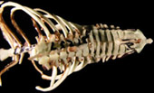

Postcranium


This work is licensed under a
Creative Commons License.
Axial skeleton
122
cervical centra length ; 0 > 2x thoracic 1 similar
thoracic 2 anteroposteriorly compressed,
123 C2 odontoid ; 0 present 1 reduced,
124 C2 odontoid shape ; 0 broad 1 narrow-pointed,
125 C3-7 spinous processes ; 0 present 1 reduced,
126 ventrum of sternum ; 0 flat 1 keeled,
127 sternal ribs ; 0 unossified 1 ossified,
128 clavicle ; 0 elongate 1 stout 2 absent,
129 dorsum proximal ribs ; 0 round 1 flattened,
130 intervertebral articulations ; 0 nomarthrous 1 xenarthrous,
131 T5-T9 spinous processes ; 0 present 1 reduced,
123 C2 odontoid ; 0 present 1 reduced,
124 C2 odontoid shape ; 0 broad 1 narrow-pointed,
125 C3-7 spinous processes ; 0 present 1 reduced,
126 ventrum of sternum ; 0 flat 1 keeled,
127 sternal ribs ; 0 unossified 1 ossified,
128 clavicle ; 0 elongate 1 stout 2 absent,
129 dorsum proximal ribs ; 0 round 1 flattened,
130 intervertebral articulations ; 0 nomarthrous 1 xenarthrous,
131 T5-T9 spinous processes ; 0 present 1 reduced,
Pectoral girdle and forelimb
132
scapular shape
; 0 craniocaudally long 1 mediolaterall long 2 mediolaterally
long and narrow,
133 scapular coracoid ; 0 reduced 1 ventral glenoid 2 anterior glenoid,
134 radius-humerus ratio ; 0 similar 1 radius longer,
135 humeral head ; 0 below tuberosity 1 even tuberosity 2 superior tuberosity,
136 humeral supinator ridge ; 0 present 1 reduced,
137 entepicond foramen ; 0 present 1 absent,
138 olecranon fossa ; 0 solid 1 fenestrated,
139 medial epicondyle ; 0 reduced 1 present 2 elongate,
140 distal humerus; 0 cylindrical 1 V-shaped troch,
141 proximal radius ; 0 capitulum 1 trochlea and capitulum,
142 proximal ulna ; 0 single surface 1 notched for radius,
143 ulnar olec ; 0 olec-humeral artic 1 reduced olecranon,
144 distal ulna; 0 no carpal articulation 1 carpal articulation,
145 ulna-radius shaft ; 0 separate 1 fused,
146 distal radius-ulna ; 0 separate 1 fused,
147 metacarpal length ; 0 much shorter forearm 1 >=33% forearm,
148 carpal arrangement ; 0 alternating 1 no lunar-unciform articulation
149 scaphoid-lunate ; 0 separate 1 fused,
150 3rd phalanx 2nd digit ; 0 ossified 1 unossified,
151 terminal phalanx shape ; 0 ML narrow 1 ML broad,
152 phalanx number ; 0 <= three 1 > three,
133 scapular coracoid ; 0 reduced 1 ventral glenoid 2 anterior glenoid,
134 radius-humerus ratio ; 0 similar 1 radius longer,
135 humeral head ; 0 below tuberosity 1 even tuberosity 2 superior tuberosity,
136 humeral supinator ridge ; 0 present 1 reduced,
137 entepicond foramen ; 0 present 1 absent,
138 olecranon fossa ; 0 solid 1 fenestrated,
139 medial epicondyle ; 0 reduced 1 present 2 elongate,
140 distal humerus; 0 cylindrical 1 V-shaped troch,
141 proximal radius ; 0 capitulum 1 trochlea and capitulum,
142 proximal ulna ; 0 single surface 1 notched for radius,
143 ulnar olec ; 0 olec-humeral artic 1 reduced olecranon,
144 distal ulna; 0 no carpal articulation 1 carpal articulation,
145 ulna-radius shaft ; 0 separate 1 fused,
146 distal radius-ulna ; 0 separate 1 fused,
147 metacarpal length ; 0 much shorter forearm 1 >=33% forearm,
148 carpal arrangement ; 0 alternating 1 no lunar-unciform articulation
149 scaphoid-lunate ; 0 separate 1 fused,
150 3rd phalanx 2nd digit ; 0 ossified 1 unossified,
151 terminal phalanx shape ; 0 ML narrow 1 ML broad,
152 phalanx number ; 0 <= three 1 > three,
Pelvic girdle
153 sacral
vertebrae ; 0 <= four 1 > four, 154 pubic symphysis ; 0 broad 1 reduced,
155 ilium ; 0 narrow 1 dorsal process,
156 ischial notch ; 0 open 1 closed,
157 sacral-ilium articulation ; 0 present 1 absent,
158 anterior process pubis ; 0 absent 1 present,
159 epipubic bones ; 0 present 1 absent,
160 caudal vertebrae ; 0 elongate 1 reduced,
Hindlimb
161
femoral fovea capitis ; 0 central 1 marginal 2 indistinct,
162 femoral neck ; 0 present head medial shaft 1 absent head above shaft,
163 third femoral trochanter; 0 proximal 1 midshaft 2 reduced,
164 medial trochanteric ridge ; 0 even 1 enlarged,
165 distal tibia-fibula ; 0 unfused 1 fused,
166 fibular ossification ; 0 ossified 1 incomplete,
167 fibula-calcaneus ; 0 articulation 1 facet small-absent,
168 peroneal process ; 0 blunt 1 large,
169 dorsum astragalus ; 0 flat 1 trochlea,
170 Sustentacular facet ; 0 separate 1 contact distal astragalus,
171 astragalar cotylar fossa; 0 abs 1 pres,
172 astragalar posteromedial process ; 0 small or abs 1 prominent,
173 astragalar navicular facet ; 0 convex 1 saddle 2 trochlea 3 concave,
174 calcaneal facet of astragalus ; 0 plantar 1 lateral,
175 astragalar cuboid contact ; 0 reduced contact 1 contact,
176 proximal cuboid ; 0 flat 1 stepped,
177 calcar ; 0 absent 1 uropatagial spur 2 calcaneal tuber,
178 pedal digital ray 1 ; 0 weight bearing 1 reduced,
179 pedal digital ray 2 ; 0 weight bearing 1 reduced,
180 pedal digital ray 3 ; 0 weight bearing 1 reduced,
181 pedal digital ray 4 ; 0 weight bearing 1 reduced,
182 pedal digital ray 5 ; 0 weight bearing 1 reduced,
183 1st metatarsal ; 0 as other digits 1 opposable,
184 metatarsal length ; 0 shorter tibia 1 approach 50% tibia,
185 hallux proximal phalanx ; 0 as other digits 1 elongate
162 femoral neck ; 0 present head medial shaft 1 absent head above shaft,
163 third femoral trochanter; 0 proximal 1 midshaft 2 reduced,
164 medial trochanteric ridge ; 0 even 1 enlarged,
165 distal tibia-fibula ; 0 unfused 1 fused,
166 fibular ossification ; 0 ossified 1 incomplete,
167 fibula-calcaneus ; 0 articulation 1 facet small-absent,
168 peroneal process ; 0 blunt 1 large,
169 dorsum astragalus ; 0 flat 1 trochlea,
170 Sustentacular facet ; 0 separate 1 contact distal astragalus,
171 astragalar cotylar fossa; 0 abs 1 pres,
172 astragalar posteromedial process ; 0 small or abs 1 prominent,
173 astragalar navicular facet ; 0 convex 1 saddle 2 trochlea 3 concave,
174 calcaneal facet of astragalus ; 0 plantar 1 lateral,
175 astragalar cuboid contact ; 0 reduced contact 1 contact,
176 proximal cuboid ; 0 flat 1 stepped,
177 calcar ; 0 absent 1 uropatagial spur 2 calcaneal tuber,
178 pedal digital ray 1 ; 0 weight bearing 1 reduced,
179 pedal digital ray 2 ; 0 weight bearing 1 reduced,
180 pedal digital ray 3 ; 0 weight bearing 1 reduced,
181 pedal digital ray 4 ; 0 weight bearing 1 reduced,
182 pedal digital ray 5 ; 0 weight bearing 1 reduced,
183 1st metatarsal ; 0 as other digits 1 opposable,
184 metatarsal length ; 0 shorter tibia 1 approach 50% tibia,
185 hallux proximal phalanx ; 0 as other digits 1 elongate